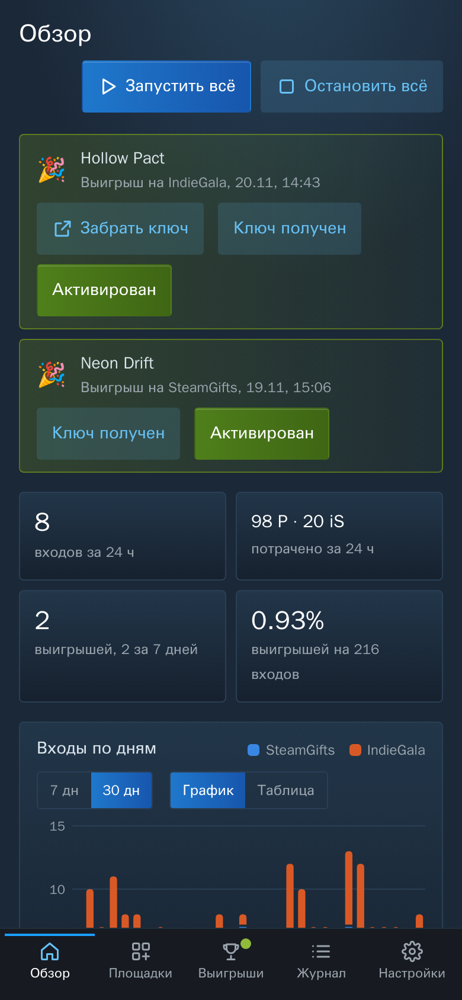

Підключення за хвилину
Скопіюйте запит сайту як cURL і вставте. Ферма перевірить вхід, нічого не зберігаючи, і покаже баланс.
— відкритий код · MPL-2.0 · Python 3.10+
[IndieGala] Акаунт palma, баланс 40 iS [IndieGala] Увійшов: ★ Doughlings: Arcade за 4 iS (учасників 31, лишилось 36) [IndieGala] Увійшов: Tiny Farm за 1 iS (учасників 40, лишилось 35) [IndieGala] Пропущено: бракує iS — 12, DLC / саундтрек / пак — 4, 18+ — 3 [SteamGifts] Чекає поінти: 21 з 30 P [Steam] Увійшов: Star Courier — додано до бібліотеки Steam [GOG] роздачі зараз немає 🎉 Виграш на IndieGala: Hollow Pact
Формат рядків справжній, ігри вигадані. Сама ферма пише журнал російською.
три з роздачами за внутрішню валюту і три з безкоштовними іграми
ферма входить за cookie з браузера і не знає жодного вашого пароля
Ферма / 01
Кожен майданчик працює у своєму потоці, а панель показує, хто зараз зайнятий, чому хтось чекає і скільки пішло за добу.

Скопіюйте запит сайту як cURL і вставте. Ферма перевірить вхід, нічого не зберігаючи, і покаже баланс.
Усі поточні роздачі й рішення щодо кожної: увійде чи чому пропустить. Без жодного витраченого бала.
Виграші, злетілі cookie і зведення за добу. З телефона: /status, /pause, /run, /preview.
Виграний ключ активується в Steam однією кнопкою, безкоштовні ігри Steam потрапляють до бібліотеки самі.
Години роботи, ліміти на добу, без DLC і 18+, без ігор, які вже є. Спершу — те, що в списку бажаного.
Будь-який комп'ютер, що не вимикається. Панель видно лише у вашій мережі або через Tailscale.



Майданчики / 02
Три сайти з роздачами за внутрішню валюту і три джерела безкоштовних ігор. Рядок веде на сторінку вікі.
Бот для командного рядка ще й повідомляє про безкоштовні ігри Epic, GOG та інших крамниць за даними GamerPower.
Шанси / 03
На IndieGala ферма ставить першими роздачі з найкращим шансом на один витрачений iS: 1 / ((учасників + 1) × ціна). Посуньте повзунки.
шанс виграти
1 / 41
шанс на 1 iS: 0.0244
Встановлення / 04
Ферма — для сервера або домашнього комп'ютера. Бот для командного рядка — якщо потрібна лише SteamGifts.
Завантажте код і встановіть залежності. Потрібен Python 3.10 або новіший.
git clone -b botfarm https://github.com/PalmaLuv/SteamGiftBot.git cd SteamGiftBot python3 -m venv env env/bin/pip install -r requirements.txt
Задайте пароль панелі й запустіть ферму на адресі комп'ютера у вашій мережі.
env/bin/python -m steamgiftbot.farm --set-password env/bin/python -m steamgiftbot.farm --host 192.168.1.10
Відкрийте http://192.168.1.10:8092, увійдіть і підключіть майданчик. Служба systemd, фаєрвол і телефон — у вікі (російською).
Поки ферма в гілці botfarm, тому клонується з -b botfarm. Після злиття в main прапорець не знадобиться.
Завантажте SteamGiftBot.exe і .sha256 зі сторінки релізів. Python не потрібен.
Звірте контрольну суму з рядком у файлі .sha256.
certutil -hashfile SteamGiftBot.exe SHA256
Запустіть: бот спитає cookie і налаштування. Пробний прохід покаже, куди б він увійшов, нічого не витрачаючи.
SteamGiftBot.exe --once --dry-run
Покладіть cookie SteamGifts (значення PHPSESSID) у файл-секрет: так його не видно в docker inspect.
sudo mkdir -p /srv/steamgiftbot printf '%s' 'PHPSESSID' | sudo tee /srv/steamgiftbot/cookie >/dev/null sudo chown -R 1000:1000 /srv/steamgiftbot && sudo chmod 600 /srv/steamgiftbot/cookie
Запустіть контейнер. Він працює не від root, образ зібрано для amd64 і arm64.
docker run -d --name steamgiftbot --restart unless-stopped \ -v /srv/steamgiftbot:/app/data \ -e STEAMGIFTBOT_COOKIE_FILE=/app/data/cookie \ -e STEAMGIFTBOT_GIFT_TYPE=All -e STEAMGIFTBOT_MIN_POINTS=0 -e STEAMGIFTBOT_PINNED=no \ ghcr.io/palmaluv/steamgiftbot:latest --config /app/data/config.ini
Це бот для командного рядка, лише SteamGifts. Ферму в Docker запускають з параметром --data — див. вікі.
Питання / 05
Коротко про головне. Подробиці — у вікі.
Можуть. SteamGifts забороняє скрипти автовходу, в інших майданчиків свої правила. Ферма робить паузи, відступає, коли сайт просить, і не обходить Cloudflare та капчі, але рішення і ризик — ваші.
Ні. Вона входить за cookie, скопійованими з браузера, і зберігає їх лише на вашому комп'ютері. Панель не віддає їх назад навіть вам.
Підійде будь-який комп'ютер, що не вимикається: міні-ПК, старий ноутбук, Raspberry Pi. Ферма майже весь час чекає.
Так. Удома — за адресою комп'ютера в мережі, поза домом — через Tailscale. Її можна додати на головний екран.
Відкрийте в майданчика вкладку «Що візьме»: у кожної роздачі там написана причина. Найчастіше скінчився баланс або вказано не той рівень акаунта.
Ні. SteamGiftBot — незалежний проєкт з відкритим кодом під MPL-2.0, не пов'язаний зі SteamGifts, IndieGala, GOG, itch.io та Valve.
↑↓ · Enter · Esc